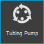
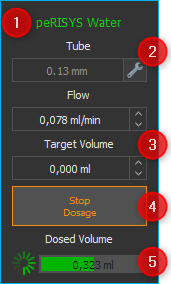
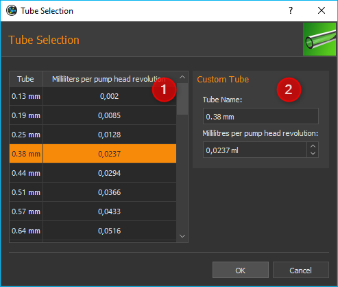
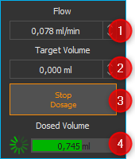
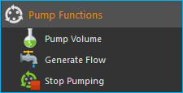
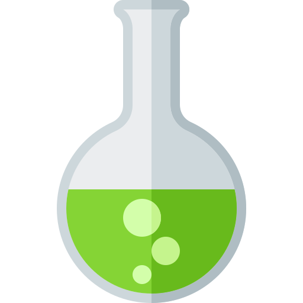
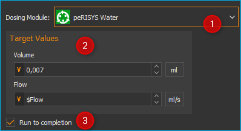
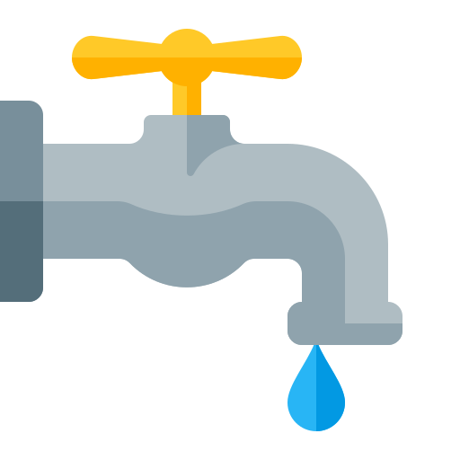
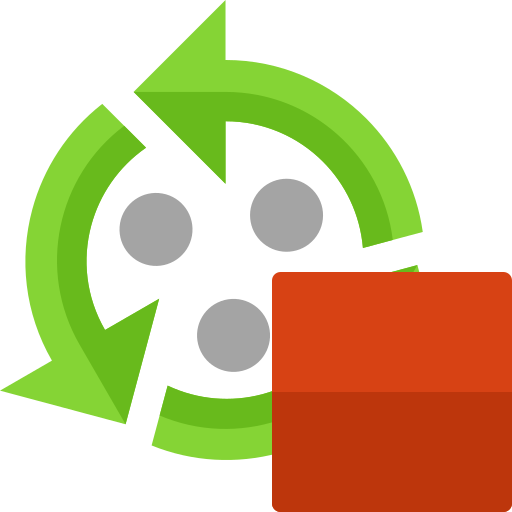

11. Schlauchpumpen Plugin
11.1. Einführung
Drücken Sie die Schaltfläche Tubing Pump in der Seitenleiste, um den Schlauchpumpe-View anzuzeigen. Der View zeigt die Bedienpanels für alle Schlauchpumpen an.
11.2. Schlauchpumpen Bedienpanel
11.2.1. Bedienelemente
Pumpenbeschriftung (anpassbar)
Konfiguration der Schläuche (Innendurchmesser)
Zielwert (Durchflussmenge, Volumen)
Dosierung starten / stoppen -Taste
Indikatoren für Aktivität und dosiertes Volumen
11.2.2. Beschriftung ändern
Die Beschriftung der Pumpe kann von Ihnen jederzeit neu vergeben werden um bestimmte Substanzen oder Nährmedien, die mit der Pumpe dosiert werden, zu kennzeichnen. Klicken Sie zum Ändern der Beschriftung einfach auf die Beschriftung ❶ und geben Sie dann einen neuen Namen für die Pumpe ein.
11.2.3. Schlauchkonfiguration
In dem Feld Tube ❷ wird der Name des aktuell konfigurierten Schlauches angezeigt. Klicken Sie zum Ändern der Schlauchkonfiguration auf den Knopf mit dem Schraubenschlüssel rechts neben dem Eingabefeld.
In dem Schlauch Auswahl Dialog (Tube Selection) der nun angezeigt wird (Abbildung oben), können Sie den Schlauch konfigurieren. Sie können dafür entweder aus einer Liste von vorhandenen Schläuchen wählen ❶, oder einen eigenen Schlauch im Bereich Custom Tube ❷ definieren.
Zur Auswahl eines vorhandenen Schlauches, klicken Sie diesen einfach in der Liste ❶ an und bestätigen die Auswahl durch Klicken auf OK. In der Liste wird Ihnen für jeden Schlauch in der ersten Spalte (Tube) der Name angezeigt. Der Wert in der zweiten Spalte (Milliliters per pumphead revolution) zeigt an, wie viel Milliliter bei einer vollständigen Umdrehung des Pumpenkopfes gefördert werden.
Wenn Sie einen eigenen Schlauch konfigurieren möchten, geben Sie im Bereich Custom Tube ❷ einen Namen für den Schlauch ein und die Milliliter, die bei einer Umdrehung des Pumpenkopfes durch diesen Schlauch gefördert werden. Bestätigen Sie dann auch hier die Konfiguration durch Klick auf OK.
11.3. Manuelle Dosierung
Um manuell zu Dosieren, gehen Sie wie folgt vor:
Geben Sie zuerst im Feld Flow die gewünschte Flussrate ein. Negative Flussraten bewirken eine Änderung der Drehrichtung des Pumpenkopfes. Sie können somit abgeben und aufsaugen.
Geben Sie dann im Feld Target Volume das Volumen, welches Sie dosieren möchten. Wenn Sie für das Volumen den Wert 0 eingeben, dosiert die Pumpe im Flussmodus. D.h. Die Pumpe dosiert solange, bis die Dosierung wieder manuell gestoppt wird. Ein negatives Volumen bewirkt eine Änderung der Drehrichtung des Pumpenkopfes.
Klicken Sie die Schaltfläche Start Dosage um die Dosierung zu starten und ein zweites Mal um die Dosierung wieder zu stoppen.
Im Bereich Dosed Volume wird nun der Fortschritt bei der Dosierung angezeigt
Tipp
Ein Volumen von 0 kennzeichnet eine unbegrenzte kontinuierliche Förderung. D.h. nach dem Start der Pumpe fördert diese solange, bis die Dosierung vom Anwender gestoppt wird.
Tipp
Durch Eingabe von negativen Werten im Feld Flussrate, können Sie die Drehrichtung der Pumpe umdrehen (z.B. für Saugbetrieb).
11.4. Script Funktionen
Das Schlauchpumpen-Plugin bietet eine Reihe von Scriptfunktionen die für die Programmierung von automatischen Abläufen und Dosierplänen verwendet werden können. Die folgenden Scriptfunktionen sind verfügbar:
11.4.1. Funktion Volumendosierung - Pump Volume
{kind=link}
Mit dieser Funktion können Sie ein bestimmtes Volumen mit einer genau definierten Flussrate dosieren. Alle Parameter, wie die Pumpe ❶, das zu dosierende Volumen und die Flussrate ❷ stellen Sie im Konfigurationsbereich ein.
Zusätzlich können Sie im Konfigurationsbereich noch den Parameter Run to completion ❸ ein- oder ausschalten. Wenn Run to completion aktiviert ist, wir die Skriptausführung erst fortgesetzt, wenn das komplette Volumen dosiert wurde und der Dosiervorgang beendet ist. Ist dieser Parameter nicht aktiv, wir die Dosierung gestartet, und dann sofort die nächste Scriptfunktion bearbeitet. Damit können Sie z.B. mehrere Dosiermodule nahezu gleichzeitig starten.
Tipp
Alle Pumpfunktionen unterstützen die Verwendung von Variablen. D.h. in allen Eingabefeldern die im Konfigurationsbereich mit einem gelben V gekennzeichnet sind (z.B. Flussrate und Volumen) können Sie Variablen eintragen.
11.4.2. Funktion Konstanter Fluss - Generate Flow
{kind=link}
Diese Funktion dient zur Erzeugung einer konstanten Flussrate. Im Konfigurationsbereich können Sie das Dosiermodul auswählen und die Flussrate einstellen. Wenn der Parameter Run to completion aktiv ist, wird die nächste Skriptfunktion erst bearbeitet, wenn das Modul manuell vom Anwender gestoppt wurde.
11.4.3. Funktion Dosierung stoppen - Stop Pumping
{kind=link}
Mit dieser Funktion können Sie einen aktiven Pumpvorgang einer Pumpe sofort stoppen.